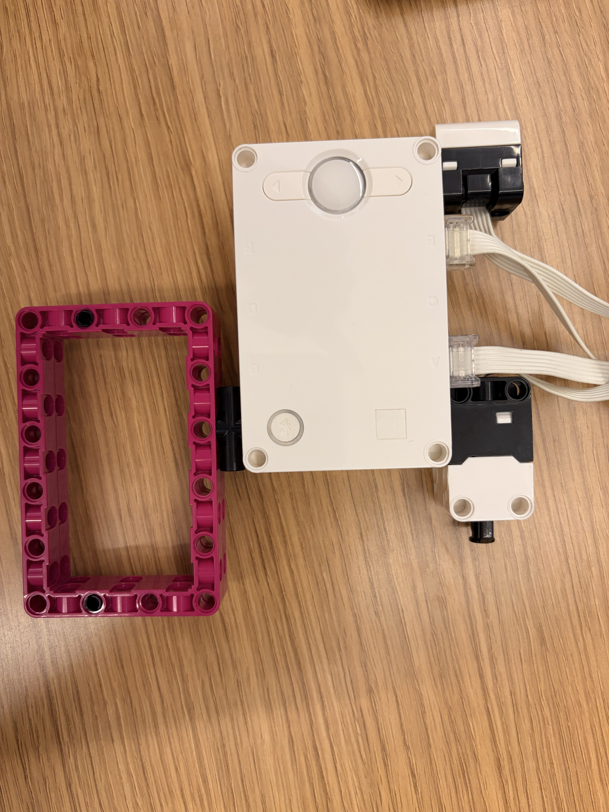
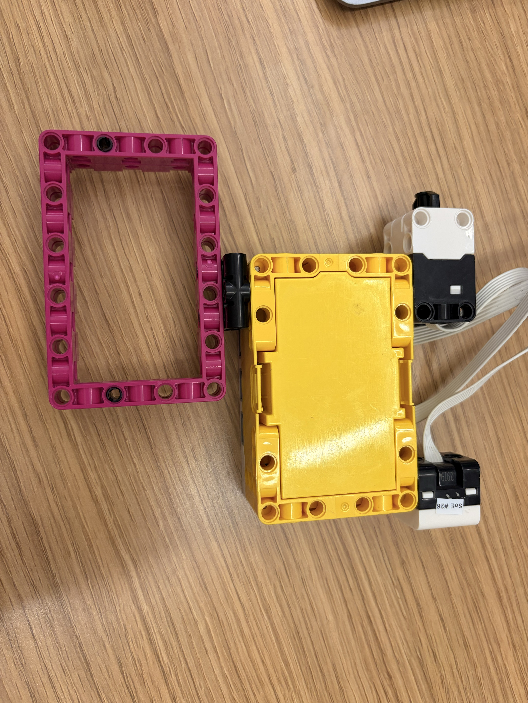

Objective: Make a machine learning model with the LEGO Spike Prime hub that works as a fruit scanner for apples and bananas.
Training phase: Pressing the left arrow saves the Color Sensor's reading as an apple, and pressing the right arrow saves it as a banana, with a distinct sound for each. The data points are mapped into a 3D space. Once at least 3 examples are saved, pressing the Force Sensor completes training and puts the hub into inference mode.
Inference phase: When I go up to an object and press the right button, the hub displays either apple or banana and plays the matching sound.
The algorithm: The model uses the k-nearest neighbor algorithm for the inference phase. From my understanding, the input is placed in a 3D space based on its RGB values. We collect a lot of data so that there are gradients of a color around some point in that space. A new RGB reading is then placed in the same space, and its nearest neighbors determine the output. We used k=3, so the three nearest data points vote on the output.
The main struggle this time was understanding how the algorithm would work, since this was my introduction to machine learning.

Here is the part of the code that runs when I press the right button in inference mode. It finds the distance from the new reading to every saved example, then the three nearest examples vote on the result.
# Read the object as a point in red-green-blue space.
red, green, blue, intensity = color_sensor.rgbi(port.E)
# Find the squared 3D distance to every saved example.
# Squared distances preserve which examples are nearest.
distances = []
for example in examples:
red_difference = red - example[0]
green_difference = green - example[1]
blue_difference = blue - example[2]
distance = (
red_difference * red_difference
+ green_difference * green_difference
+ blue_difference * blue_difference
)
distances.append((distance, example[3]))
# Put the nearest saved examples first.
distances.sort()
# The 3 nearest examples vote on the result.
apple_votes = 0
banana_votes = 0
for neighbor_number in range(3):
if distances[neighbor_number][1] == "apple":
apple_votes += 1
else:
banana_votes += 1
# Display the winning fruit and play its sound.
if apple_votes > banana_votes:
await light_matrix.write("APPLE")
await sound.beep(APPLE_SOUND_HZ, SOUND_LENGTH_MS)
else:
await light_matrix.write("BANANA")
await sound.beep(BANANA_SOUND_HZ, SOUND_LENGTH_MS)